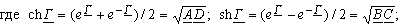
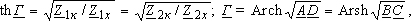
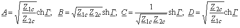
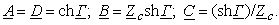
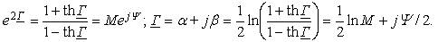

2.8.2.6. Уравнения четырёхполюсника, записанные через гиперболические функции
  а коэффициенты А -формы: . Для симметричного четырёхполюсника уравнения передачи:
а первичные параметры ЧП, выраженные через его характеристические:
 Если известны параметры Z1к и Z1х или Z2к и Z2х четырёхполюсника, то постоянную ослабления αНп и постоянную фазы β можно определить по следующей методике. Преобразовав выражение
получим:

Откуда постоянная ослабления четырёхполюсника αНп = (lnM)/2 и постоянная фазы β = Y/2.
|
|||||||